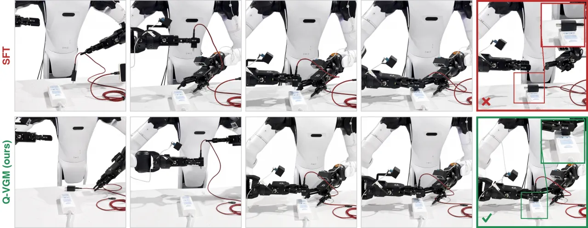
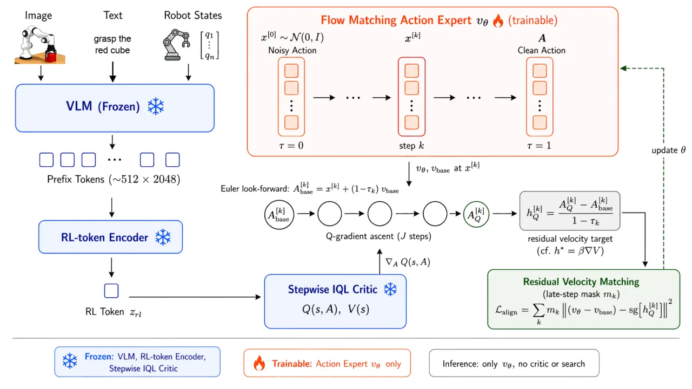

SFT 只学专家近优数据，无法从失败 rollout 中学习。Q-VGM 用一个 off-policy critic 的一阶信号 ∇AQ，把去噪过程当作最优控制问题：用 look-forward 干净动作估计 + 迭代 Q-梯度上升 + keep-best 选择得到「改进后的动作」，再折算成残差速度目标直接监督速度场。不需要动作似然、不反传整条去噪链、完全离线、推理时不用 critic——在 LIBERO 上把平均成功率从 79.0% 提到 92.5%。
Flow-matching action expert 已是 VLA 的主流骨干，但其后训练几乎都靠在专家演示上做 SFT——这继承了模仿学习的根本局限：只利用近优的专家数据，部署与评测时产生的大量失败与次优 rollout 无从利用，策略性能被演示的质量和覆盖度封死。RL 原则上能从成败经验中同时提取信号，让策略超越示教者。
但对 flow-matching VLA，实现这一点受两方面制约：(1) 数据 regime——PPO / GRPO 这类 on-policy 方法每次更新都要新鲜 rollout，真机上代价高昂且丢弃历史经验；(2) 参数化——policy gradient 需要可解的动作似然，而迭代去噪并不暴露它，且 policy gradient 只用到零阶奖励（标量 advantage）。相比之下，来自 learned critic 的一阶信号 ∇AQ 样本效率显著更高。这促使转向 off-policy、value-based RL。
核心障碍是一个「错配」：critic 评估的是可执行的干净动作 chunk，而 flow policy 演化在带噪的中间状态上。因此价值改进必须表达为「去噪时刻的速度修正」，而非终端动作标签。
已有 value-based 方法都没能给速度场本身提供 value-aware 监督：反传整条去噪链（Diffusion-QL）在 VLA 规模上不稳定；test-time Q-selection / Q-guidance 不改动底层策略；把 critic 改进后的动作蒸馏成终端监督标签（PA-RL）则无视了速度场的 flow 结构。

Q-VGM 把策略改进建成对 π0.5 去噪过程的随机最优控制（stochastic optimal control）问题：在 KL 正则的 tilted 分布下，最优速度修正 h⋆ = β·∇xV 正比于去噪时刻价值函数的梯度。整套方法分两步——先训练一个 off-policy critic，再把 critic 的梯度转成残差速度目标去监督 action expert。只训练 action expert；推理时仅跑 vθ，不做 critic 查询或搜索。

Value-gradient matching 需要可靠的动作空间梯度 ∇AQ。为此设计一个 off-policy critic： 状态表示——把冻结 VLM backbone 产生的 prefix 用 autoencoder 压成一个 RL token zrl∈ℝ2048，与本体感（proprioceptive）投影拼接成 critic 状态 s；重建损失作为正则让 zrl 保持锚定在冻结 prefix 上。因 zrl 维度远高于 A，为避免忽略动作输入，把动作 chunk A 在 critic 每一隐层重新注入（per-layer action injection），保住局部动作敏感性。
Stepwise IQL 训练——稀疏奖励长时程任务里，整段 chunk 只给一个值太弱，因此 critic 预测每个动作位置的分步值 {Q(i)(s,A)}，需要标量时再求和 Q(s,A)=ΣiQ(i)。用 IQL（expectile τ=0.8）训练：action-free value head 预测分步 V(i)，每个 Q-head 朝分步 TD target 回归（chunk 内 bootstrap 到下一位置、边界处 bootstrap 到下一 chunk 首位）。用两个 Q-head 取最小（clipped double Q-learning）。因 backup 用 V 而非策略采样动作，critic 训练完全 off-policy。
令终端奖励 r(x1)=Q(s,x1)。h⋆ 需要每个去噪时刻的 ∇xV，但 critic 只在干净动作处给 ∇AQ。方法先估计再折算：
Residual velocity matching：只在晚期步（mask mk）上训练 action expert，使其残差速度 (vθ−vbase) 匹配 detached 的 ĥQ。轨迹、look-forward 估计、候选与目标都 stop-gradient，梯度只流过当前局部预测 vθ(x[k],τk)。推理时 vθ=vbase+hθ，critic 引导被完全 amortize 进 action expert——无 test-time search，无整链反传。
统一从 few-shot SFT 的 π0.5 出发，用 SFT 策略评测 rollout 组成固定数据集，训练 stepwise IQL critic，再离线微调策略。critic-based 基线共享同一 SFT checkpoint / rollout 数据 / RL-token 特征 / critic，只在「如何用 critic」上不同。四个研究问题 RQ1–RQ4 覆盖仿真提升、抽取机制对比、样本效率、真机迁移。
| Method | Spatial | Object | Goal | Long | Avg |
|---|---|---|---|---|---|
| Initial policy (π0.5 few-shot SFT) | 85.6 | 84.8 | 83.4 | 62.2 | 79.0 |
| Test-time Q Selection | 90.2 | 89.6 | 87.8 | 76.2 | 86.0 |
| Test-time Q Guidance | 93.8 | 90.6 | 89.8 | 80.4 | 88.7 |
| Q-Improved Action Distillation | 93.4 | 91.8 | 90.6 | 79.2 | 88.8 |
| Diffusion-QL | 79.8 | 74.6 | 80.4 | 55.6 | 72.6 |
| Q-VGM (Ours) | 96.2 | 95.4 | 94.6 | 83.8 | 92.5 |
Q-VGM 在每个 suite上都超过 test-time critic 方法与蒸馏基线。值得注意：Diffusion-QL 反而把 SFT 策略拉低到 72.6%——因为把 critic 梯度反传过整条去噪链不稳定，印证了论文的动机论证。
| Method | Backbone | Type | RL data | Spatial SR |
|---|---|---|---|---|
| πRL | π0.5 | online PPO | ≈204,800 on-policy episodes | 99.6 |
| SimpleVLA-RL | OpenVLA-OFT | online GRPO | ≈358,400 on-policy episodes | 99.1 |
| ARFM | flow VLA | offline | benchmark demos + 手工 dense reward | 95.8 |
| Q-VGM (Ours) | π0.5 | offline | 500 eval episodes + 432 demos | 96.2 |
Q-VGM 用比 online RL 微调少约 400× 的 rollout episodes 取得提升，且只用 SFT 策略标准评测中已经记录的 episodes 加一个稀疏成功奖励——不需额外专家监督或手工稠密奖励。（诚实对比：纯 online RL 的 πRL/SimpleVLA-RL 在 Spatial 单项上以海量数据换到更高的 99+%。）
| Task | Success rate |
|---|---|
| Grasp Blue Cup | 20/20 |
| Handover Microphone | 15/20 |
| Move Pot | 19/20 |
在双臂机器人平台上做 train–deploy–collect–retrain 循环：从 few-shot SFT 起，策略仅用自生成 rollout 做完全离线更新，每个改进后的策略再部署去采新经验。第四个任务是需要毫米级对齐的插头插接（见 Figure 1）。
| Variant | Avg SR (%) |
|---|---|
| Full method | 92.5 |
| ResNet encoder 取代 RL token | 87.4 |
| No per-layer action injection | 88.2 |
| Single critic head | 90.1 |
| No keep-best selection | 88.6 |
| All-step velocity alignment (mk=1) | 86.2 |
| No frozen-base anchor | 86.8 |
Critic 侧：用 ResNet 图像编码器替代 RL-token 状态下降最大（92.5→87.4），说明 value-gradient matching 受益于 VLA-grounded 的状态表示；per-layer 动作注入与 double-Q 最小也提升局部动作敏感性。策略侧：keep-best 避免在过冲时用最后一次上升迭代，late-step mask 把引导集中在 look-forward 估计最接近 critic 训练分布的地方，frozen-base anchor 把速度目标绑在行为策略支撑上——三者都对「梯度→速度目标」的转换起稳定作用。
价值梯度只在离线 rollout 支撑附近最可信；离开该区域，critic 误差会产生误导性的速度修正。论文用 gradient clipping 与 keep-best（在梯度上升不改善时回退到 base 动作）缓解，并指出更强的做法是把 trust region 内化进采样动力学、自适应地约束相对预训练 flow policy 的 path-space 偏离。
随任务时程与环境多样性增长，Q-learning 越来越难 scale。作者提出的未来方向是把 world model 与价值估计结合：学到的动力学模型可通过多步 rollout 缩短有效 TD 时程，价值函数继续为 value-gradient matching 提供梯度信号。
look-forward 近似 ∇xV≈∇AQ 只在边界 τ=1 精确，随 τ 减小退化，因此监督仅施加在最后 M=5 步；早期去噪步不接受 critic 引导（此为方法设计的直接推论）。